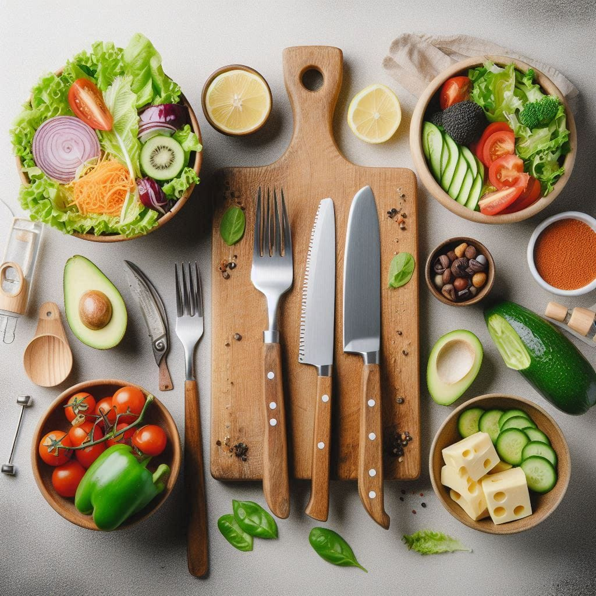

Salata Yapmanın Püf Noktaları

Salata tariflerinizin lezzetini artırmak için en önemli adım, malzemelerin taze ve mevsiminde olmasıdır. Renkli sebzeler, taze yeşillikler ve farklı dokuların uyumu, salatanızın hem göze hem damağa hitap etmesini sağlar.
Sosları ise servis öncesi eklemek, salatanızın tazeliğini korur. Limon, zeytinyağı ve taze baharatlarla hazırlayacağınız hafif soslar, salatanızın lezzetini katbekat artıracaktır.
Salata Tarifleriyle Sofralarınızı Şenlendirin
Salatalar sadece sağlıklı değil, aynı zamanda sofralarınızın vazgeçilmezi olabilir. Farklı malzemelerle denemeler yaparak kendi özel tariflerinizi oluşturabilirsiniz. Klasik Akdeniz salatasından, meyveli ve proteinli salatalara kadar geniş bir yelpazede tariflerimizi keşfetmek için Tariflerimiz sayfasını ziyaret edin.
Ayrıca, kendi tariflerinizi bizimle paylaşmak isterseniz Tarif Gönder sayfasını kullanabilirsiniz. Sağlıklı ve lezzetli salatalar yapmak hiç bu kadar kolay olmamıştı!